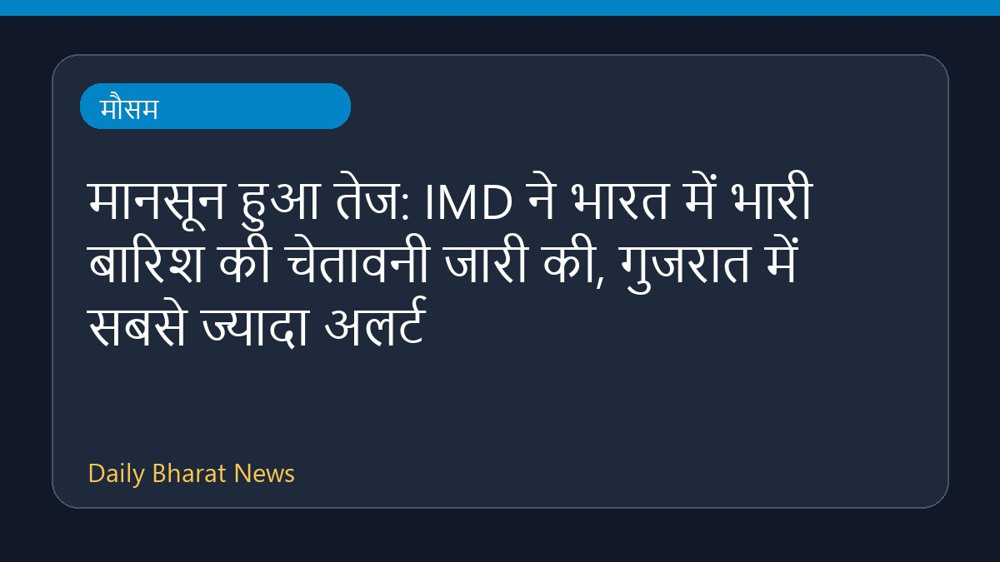

मानसून हुआ तेज: IMD ने भारत में भारी बारिश की चेतावनी जारी की, गुजरात में सबसे ज्यादा अलर्ट

भारत में मानसून के तेज होने के साथ ही मौसम विभाग (IMD) ने देश के कई हिस्सों में भारी बारिश की चेतावनी दी है। इस स्थिति को देखते हुए गुजरात राज्य को सबसे ऊंचे यानी रेड अलर्ट पर रखा गया है। मौसम संबंधी इन चेतावनियों के बीच संबंधित एजेंसियों को सतर्क रहने के निर्देश दिए गए हैं। वर्तमान में बारिश की गतिविधियों और व्यापक प्रभावों को लेकर विस्तृत विवरण सीमित हैं, लेकिन प्रशासन एहतियाती कदम उठा रहा है।
मूल स्रोत: Weather News Sources
Monsoon intensifies: IMD issues heavy rain warnings across India, Gujarat on highest alert - The Times of India ↗
Monsoon intensifies: IMD issues heavy rain warnings across India, Gujarat on highest alert - The Times of India ↗